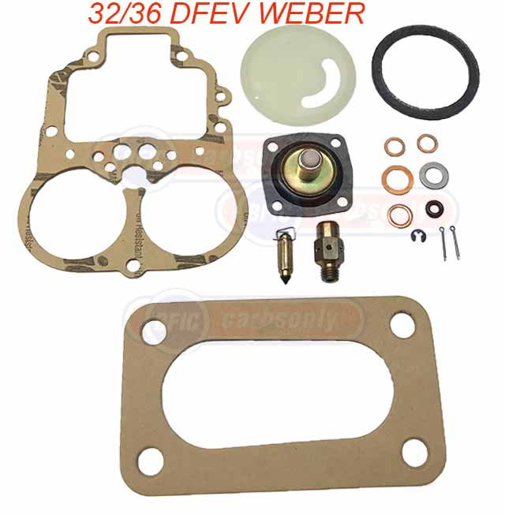
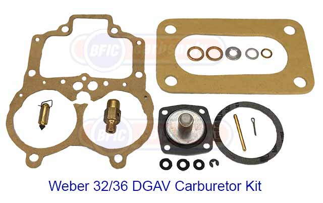
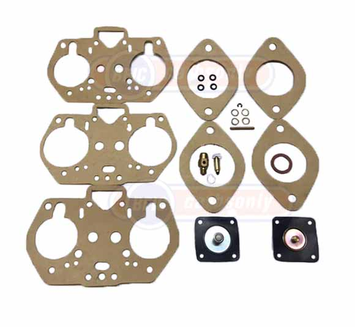
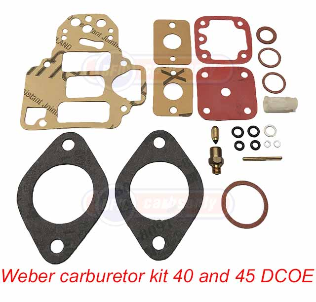
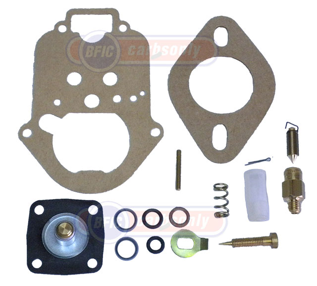
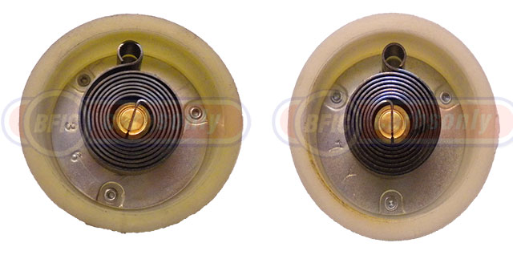

Weber parts and kits
Weber Carburetor
Kits and parts
We're constantly helping customers around the world, with Weber rebuild kits, and all the Weber tuning parts, repair parts, and accessories. Here's just a sampling:
 |
 |
| 1 Weber carburetor kit 32/36 DFEV | 2 Weber carburetor kit 32/36 DGEV and 32/36 DGAV |
 |
 |
| 3 Weber carburetor kit 40 and 44 IDF | 4 Weber carburetor kit 40 anf 45DCOE |
 |
 |
| 5 Weber carburetor kit 34 ICH and ICT | Weber electric choke thermostat 32/36 DGAV and 32/36DFAV |
If your Weber parts are not listed here, be sure to ask Sometimes it's difficult to identify carburetor parts, so we often exchange diagrams by mail, or digital photos by e-mail. If you are tunig DCOE's, IDF's or DFA's you may want the excellent " Weber Tuning Guide." Plus we'll often help customers benchmark their Webers to determine which tuning parts would help improve performance.
Our business is built on a foundation of quality, service and integrity.